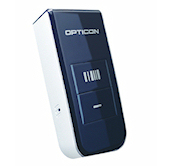
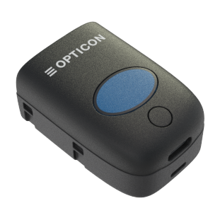
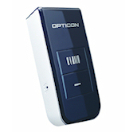
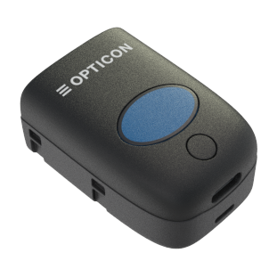

All OPN2004, OPN2005, OPN2006, RS3000 and PX20 terminals run an OS (operating system) and an application. Both the OS and the application can be loaded by a small PC application called APPLOAD.
| Terminal | Code |
|---|---|
| OPN2004 | RBI |
| OPN2005 | RBL |
| OPN2006 | RBN |
| PX20 | RBM |
| RS3000 | RBZ |
| USB Driver Installer |
After installing the USB driver, you can connect your OPN2004, OPN2005, OPN2006, RS3000 or PX20 to USB using the USB cable. Windows will then automatically install a virtual COM port on your PC, which can be selected in various applications, like appload, Hyperterminal Neto32 or OSEComm.
| Load OS or application. | |
|---|---|
USB Cable |
Connect the OPN2004 to your PC or laptop using the mini-USB cable Start Appload and select the (Virtual) COM port of your OPN2004 in Appload. Select the OS or application file in Appload. |
| Load OS or application. | |
|---|---|
USB Cable |
Connect the OPN2005/6 to your PC or laptop using the mini-USB cable. Start Appload and select the (Virtual) COM port of your OPN2005/6 in Appload. Select the OS or application file in Appload. |
Bluetooth |
<Currently not supported> |
| Load OS or application. | |
|---|---|
USB Cable |
Connect the device to your PC or laptop using the USB cable. Start Appload and select the (Virtual) COM port of your PX20 in Appload. Select the OS or application file in Appload. |
Bluetooth |
<Currently not supported> |
For this reason the OPN2004/OPN2005/OPN2006/RS3000 and PX20 have a few escape mechanisms to allow you to restart, halt your application and/or install new software. This can be very useful in case the OPN2004/OPN2005/OPN2006/RS3000 or PX20 has crashed or is constantly restarting due to a crashing application.
| Restart mechanisms | |
|---|---|
| Automatic | The OPN2004/OPN2005/OPN2006/RS3000 and PX20 have a watchdog timer to determine whether the OS is still running or has crashed. This watchdog will cause the device to restart after 3 seconds if the OS has crashed. This watchdog timer will not cause a restart when only the application has crashed. |
| Manually | The OPN2004/OPN2005/OPN2006/RS3000 and PX20 have a manual restart mechanism that allows you to restart in situations that the OS is still running, but your the application has crashed. In order to activate this mechanism, press and hold both the trigger and delete key for at least 20 seconds. After the terminal has sounded a short beep, you can release both keys to complete the restart. |
| Halting your application |
|---|
| Restart your application using one of the two restart methods listed above, but keep both keys pressed after the short beep. |
| Release the trigger key first to halt the application. |
| If successful, the LED of your OPN2004 / OPN2005 / OPN2006 / RS3000 / PX20 should now be blinking orange. You should now be able to load new application or OS software. |
To exit the halted application state, press both keys for 20 seconds |
| Halting the Operating System (only necessary in case a corrupt OS is installed) |
|---|
| Restart your application using one of the 2 methods listed above, but keep both keys pressed after the short beep. |
| Release the clear key first to halt the Operating system. |
| If successful, the LED of your OPN2004 / OPN2005 / OPN2006 / RS3000 / PX20 should now be blinking red. You should now be able to load a new OS. |
To exit the halted Operating System state, press both keys for 3 seconds |